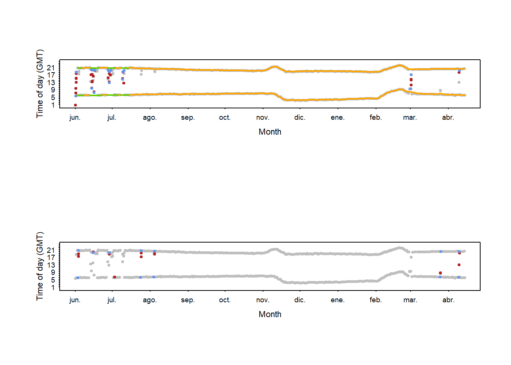
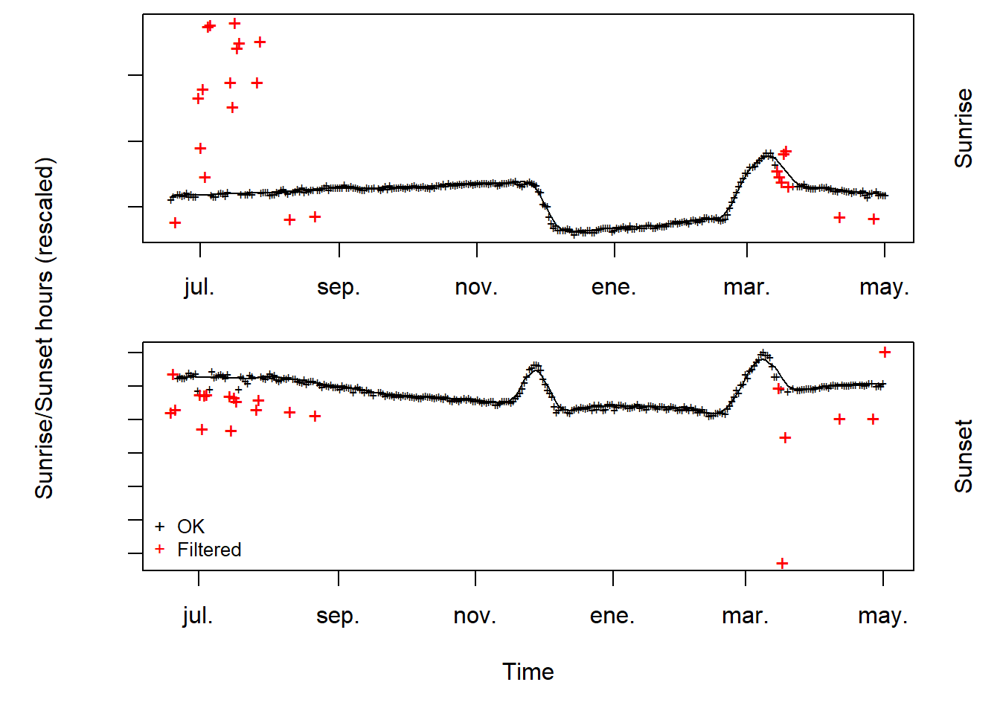

# Installing all the packages and load their libraries we need to run the script
pacman::p_load('devtools','remotes', # loading packages
'readxl', # opening Excels and csv
'tidyverse', #manging data
'lubridate', # dealing with dates
'maps', 'rworldmap', 'maptools', # creating map for preprocessLight
'GeoLight', 'BAStag', 'TwGeos','SGAT', # geolocators
'suncalc' # knowing twilights depending on the place
)
if ("purrr" %in% .packages()){
detach("package:purrr", unload = TRUE)
}
# to avoid problems with map functionTrn automated calculation
1. Introduction: why calibrate GLS?
2. Load packages and functions
All packages we need for the analyses have been installed in the previous script. At this step, we only need to load them.
We also load own functions, specifically designed for working with GLS data.
source('functions/FUNCTION_twilight_cleanup.R')
source('functions/FUNCTION_move_twilights.R')
source('functions/FUNCTION_double_smoothing.R')
source('functions/FUNCTION_assign_equinox_periods.R')
source('functions/01_FUNCTIONS_Supervised_GLS_calibrations.R')3. Read metadata and calibration parameters
Metadata file contains the files available for each GLS (i.e., light, wet-dry and SST data) and the format of each file, which depends on the producer.
Calibrations data contains the zenith angles and shape and scale of the distribution of the twilight estimation error. Both derived from the thresholdCalibration function from TwGeos package
In addition, mean values per year, colony and producer are stored in summary of calibrations
4. Processing raw light data to twilight events data
As in the previous step, we will work through a loop to process all the GLS files.
4.1. Read GLS information
We read the metadata information of each GLS as in the previous script.
gls.dir <-paste0(getwd(),'/input/GLS/')
i=1
# Load .lux file and extract the GLS id from the name of the file
info<-mdata[i,]
N_trip <- info$N_trips
lightfile <- if_else(!is.na(info$File.adjlux), info$File.adjlux, info$File.lux)
lightfile_c <- paste0(gls.dir, lightfile)
# if (!file.exists(lightfile) | is.na(lightfile_c)){
# mdata[i, c(21:23)] <- list(NA, 'No data', 'No')
# next
# }
geoID<-info$geo_alfanum # Which GLS is processing
geo_trip<-info$geo_trip # Which GLS trip is selecting
LoggerModel <- info$Modelo # logger model
Producer <- info$Producer # e.g "Migrate Technology","BAS","Biotrack","Lotek"
start_date<-as.Date(info$start_date, tz = 'GMT') #date start the trip
end_date <-as.Date(info$end_date, tz = 'GMT') #date end the trip
year_rec <- info$Year_rec #which year we recovered the GLS
col.name <- info$Colony
col_lat <- info$Colony.lat
col_lon <- info$Colony.lon
sun_angle <- select_sunAngle(producer = Producer, col.name, year = year_rec,
calib.sum, calibs, param = F)The logger has calibrations The function select_sunAngle allows user to choose the zenith angle determined during the calibration step If the GLS was not calibrated or was not in the dataset, the zenith angle and the twilight error parameters (alpha mean and alpha sd; also known as shape and scale) are selected from the summary dataset. The function will select the parameters according to the producer, colony and year of the GLS trip.
4.2. Read light data
We read raw light data as in the previous step. As difference, we determine deploying and recovering dates of the GLS. Then we define the starting and ending dates of data recorded to check the yearly data are completed. For next step, we define equinox dates of these years.
lu <- read_lightGLS(producer = Producer, ID = geoID,
file = lightfile_c,
start_date,
end_date,
)
# if (is.null(lu) | nrow(lu) == 0) {
# mdata[i, c(21:23)] <- list(NA, 'No data', NA)
# next
# }
#Determine the recording interval
li<-median(difftime(lu$dtime[2:nrow(lu)],lu$dtime[1:(nrow(lu)-1)],units='mins'))
# Calculate the start and end year
start_year <- year(lu[1, 1])
end_year <- year(lu[nrow(lu), 1])
# Check if the GLS trip contains enough data for analysis
if (start_year == end_year) {
# Not enough data, indicate for removal
GLS.files2[i, c(21:23)] <- list(NA, 'Data', 'Remove')
message(paste0('Remove ', geo_trip, ' without enough data'))
#next
}
# Select the equinoxes of this year
Sept_eq <- as.Date(paste0(start_year, '-09-21'))
Mar_eq <- as.Date(paste0(end_year, '-03-21'))4.3. Automated calculation of twilight events
This is the main step of this part of the GLS analysis. Twilight events (sunrise and sunset) times are calculated using the twilightCalc function from GeoLight package. Then code is based on two functions designed by SEATRACK project: twilight_cleanup and move_twilights functions. The first one is used to remove the erroneous twilight events and the second one to move the twilight events that are slightly inaccurate (e.g., earlier or later than the running mean value of the next ones).
# Logaritmic values can help and are recommended in some cases
# lu$lux2<-log(lu$lux)
# This function calculates automatically twl for all the period of light data
twl <- try(
twilightCalc(lu$dtime, lu$lux,
ask = FALSE, preSelection = TRUE,
LightThreshold = 2, maxLight = li),
silent = TRUE
)
# if (inherits(twl, 'try-error')) {
# message(paste('Geo (', i, ') ', geo_trip,' wihtout twilight calculation - Skipped'))
# mdata[i, c(21:23)] <- list(NA, "Data. Problem with twilight calculation", NA)
# next
# }
# type=1 and type=2 not always correctly assigned, this fixes most of these cases:
for(j in 1:(nrow(twl)-2)){
if(sum(twl$type[j:(j+2)])==3){twl$type[j+1]<-2}
if(sum(twl$type[j:(j+2)])==6){twl$type[j+1]<-1}}
# Geolight is removing a minute extra unlike bastrack and intiproc when advancing sunset,
# I add a minute to compensate
twl$tFirst[twl$type == 2] <- twl$tFirst[twl$type == 2] + 60
twl$tSecond[twl$type == 1] <- twl$tSecond[twl$type == 1] + 60
twl<-twl[,c(1:3)]
# Open a pdf to record the plots that illustrate the edition of twilights
# pdf(file= paste0(wd,'/Plots/twlEdit/', geo_trip,'_', year_rec, '_', colony,'.pdf'))
par(mfrow= c(2,1))
# 4.2. Remove and clean unrealistic twilight ####
twl2<-twilight_cleanup(df = twl,
breedingloc_lon = col_lon,
breedingloc_lat = col_lat,
months_breeding = c(5,6,7,8),
months_extensive_legtucking = NA,
show_plot = T)ERROR : valor ausente donde TRUE/FALSE es necesario
ERROR : valor ausente donde TRUE/FALSE es necesario twl2<-distinct(twl2)
twl3<-move_twilights(df = twl2,
minutes_different= 15,
sun = sun_angle,
show_plot = TRUE)Note: Out of 623 twilight pairs, the calculation of 20 latitudes failed (3 %)
twl3<-distinct(twl3)
# Optional filters
twl3<-twl3%>%
mutate(loess = loessFilter(twl3, k=3, plot = T),
speed_filter = distanceFilter(twl3, degElevation = sun_angle, distance = 500,
units = "hour"))
Note: 19 of 617 positions were filtered (3 %)#filter(loess == TRUE)%>%
#filter(speed_filter == TRUE)4.4. Save trn files
In order to save the data as .trn files, we create a column to give a confidence value to each twilight event. Maximum confidence value is 9, which is given to every twilight with this procedure except to those twilight events close to the equinox dates.
We save the files with two formats, one as backup that has the same format of the .trn files that can be obtained using the Locator software. The other is more practical for our purposes.
# Adding some columns to read it easily by any algorithm functions
twl4<-twl3%>%
mutate(Twilight = tFirst,
Rise = ifelse(type=='1',TRUE,FALSE),
confidence = 9,
Julian = yday(Twilight))
# Assign confidence for equinox periods as we used to do
twl4 <- twl4 %>%
mutate(
confidence = case_when(
between(Twilight, Sept_eq - 20, Sept_eq + 20) ~ 2,
between(Twilight, Sept_eq - 10, Sept_eq + 10) ~ 1,
between(Twilight, Mar_eq - 20, Mar_eq + 20) ~ 2,
between(Twilight, Mar_eq - 10, Mar_eq + 10) ~ 1,
TRUE ~ confidence
)
)
# Select columns to save
trn<- twl4[, c(1:3,6,7,9,8,4,5)]
# trn <- distinct(trn)
# Name of the file
file.trn<-paste0(geo_trip,'_', info$Sp,'_', year_rec,'_',info$Colony, '_automated.trn')
write.table(trn,
paste0('output/', file.trn),
sep = ',', col.names = T, row.names = F, quote = F)
# Saving a trn file in old format to see the results in Locator (BirdTracker)
trn.bak <- trn %>%
mutate(
date_time = format(Twilight, format = '%d/%m/%y %H:%M:%S'),
type = ifelse(Rise == T, 'Sunrise', 'Sunset')
) %>%
arrange(date_time) %>%
dplyr::select(date_time, type, confidence)
# Change the format of the date column to match with 'Locator' software
file.trn.bak<-paste0(geo_trip,'_', info$Sp,'_', year_rec,'_',info$Colony, '.trn')
#Save trn file
write.table(trn.bak,
paste0('output/', file.trn.bak),
sep = ',', col.names = F, row.names = F, quote = F)
# Add the name of the file to the dataset
cat('Trn from geo (', i,') ',geo_trip, ' is saved \n')Trn from geo ( 1 ) 11001001 is saved mdata[i, c(21:23)] <- list(file.trn, 'Data', 'No')